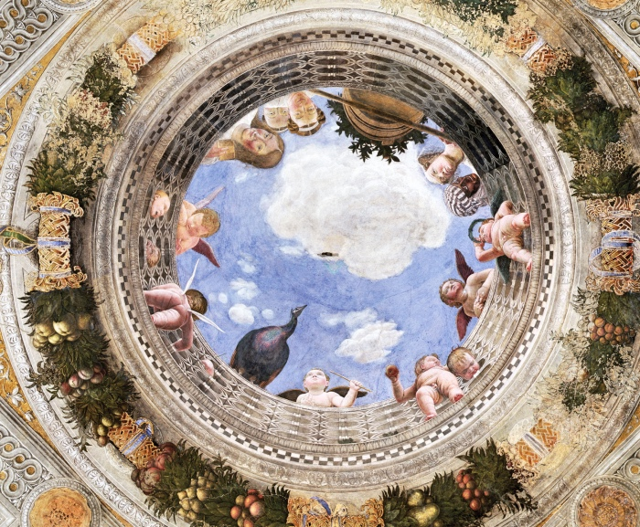

| Palazzo Ducale | ||
|
Storia del Palazzo Il Palazzo Ducale di Mantova, noto anche come reggia dei Gonzaga, è uno dei principali edifici storici cittadini. Dal 1308 è stata la residenza ufficiale dei signori di Mantova, i Bonacolsi, e quindi la residenza principale dei Gonzaga, signori, marchesi ed infine duchi della città virgiliana. Ospitava il Gonzaga dominante del tempo, sua moglie, il figlio legittimo primogenito e gli altri figli legittimi sino alla maggiore età nonché gli ospiti importanti[3]. Assunse la denominazione di Palazzo Reale durante la dominazione austriaca a partire dall'epoca di Maria Teresa d'Austria regnante. Ogni duca ha voluto aggiungere un'ala per sé e per le proprie opere d'arte, il risultato è un'area di più di 35.000 m² che ne fanno una delle regge più estese d'Europa[4] dopo i palazzi del Vaticano, il Palazzo del Louvre, la Reggia di Versailles, la Reggia di Caserta, la Reggia di Venaria Reale, il Palazzo Buckingham, il Castello di Fontainebleau, il Palazzo d'Inverno o ancora il Palazzo Reale di Stoccolma. Ha più di 500 stanze[5] e racchiude 7 giardini e 8 cortili.[6] |
|
CAMERA DEGLI SPOSI  |
STANZA DEI GIGANTI 
|